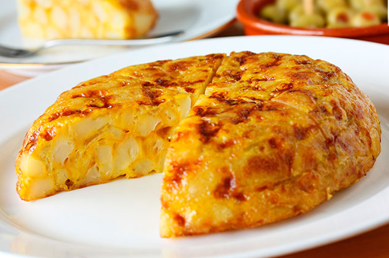

Spanish Omelette

Description
The Tortilla Española, or Spanish Omelette, is an omlette made of potatoes and onions, very typical to eat as a tapa (a little dish that accompanies a drink).
Warning: if you don't use onions to make the Spanish Omelette, then it's not a Spanish Omelette (I would say it is not even a omelette!).
Ingredients
- 4 or 5 medium potatoes
- 6 eggs
- 1 medium onion (if you forget it, the omelette will turn poisonous)
- Olive oil
- A pinch of salt
Steps
- Peel the potatoes and onion.
- Chop the onion into very small pieces.
- Get a new frying pan, making sure the Teflon coating is not worn out.
- Put a little olive oil in the pan and start frying the onion over a low heat.
- While the onion is frying, cut the potatoes into very thin slices.
- Add a little more olive oil to the pan and fry the potatoes over a low heat, stirring them every so often so they don't burn and they are all fried.
- When the potatoes are soft and golden, remove them along with the onion.
- Beat the 6 eggs in a large bowl.
- Once beaten, add the potatoes with the onion and a pinch of salt. Mix everything together.
- Use the oil in the pan and heat it up. If there is very little left, add a little more, but don't overdo it; there should be a thin layer of oil that covers the entire pan.
- When the oil is hot, add the egg and the potatoes.
- Fry everything over a low heat, stirring occasionally to prevent it from sticking. You can use a wooden fork to gently lift the sides, making sure they don't stick.
- When the bottom is set, it's time to turn it over: grab a plate, put it upside down on the omelette, and flip the plate and pan over. Don't be a show-off trying to flip it in the air; the result can be disastrous.
- Put another thin layer of oil on the pan, and fry the other side of the omelette. It will be done in no time, be careful not to burn it.
- And eat!